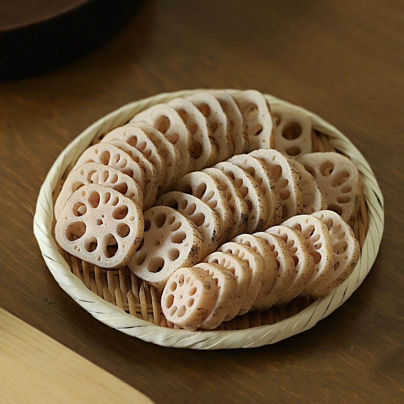
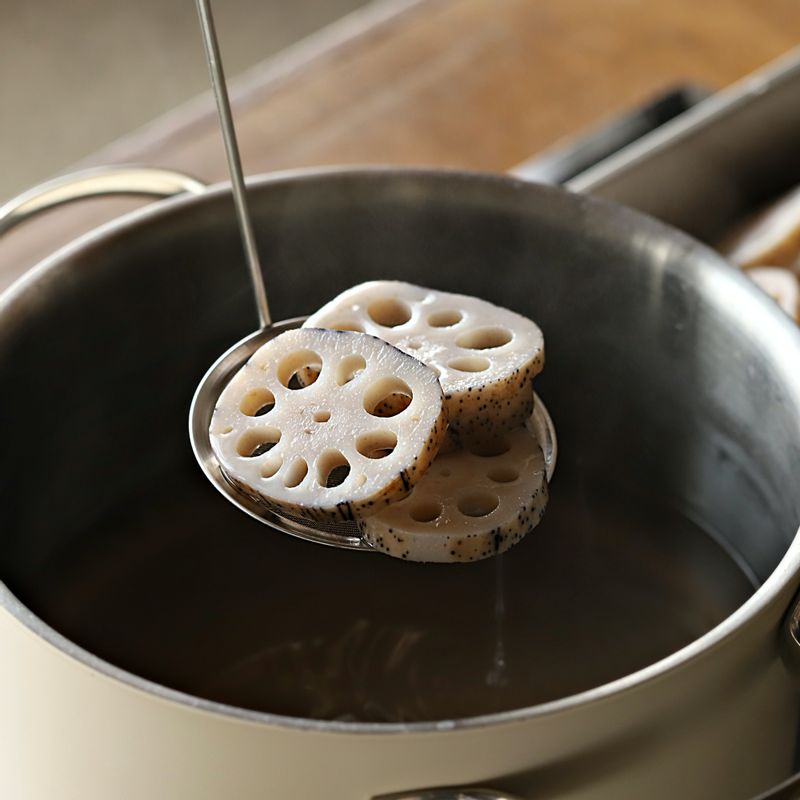
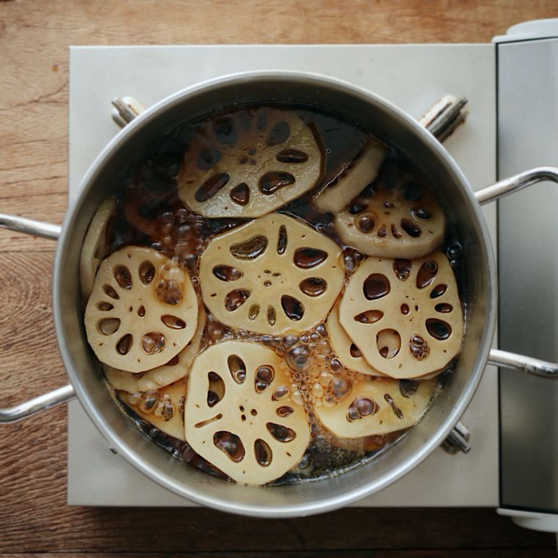
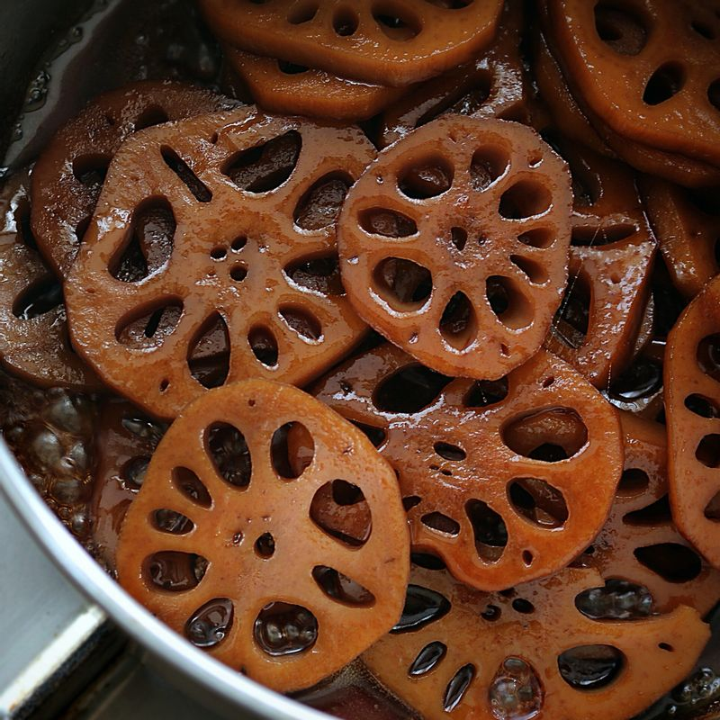

-

연근은 조리용 솔로 문질러 씻어주세요. 0.5cm 두께로 잘라주세요.
-

냄비에 연근이 잠길 정도의 물과 연근, 식초, 소금을 넣고 20분 정도 데친 후 찬물에 헹궈주세요. 체에 받쳐 물기를 제거해 주세요.
-

냄비에 물 4컵과 양념 재료를 넣고 끓여 양념이 끓어오르면 데친 연근을 넣어 1시간 정도 중간 불에서 졸여주세요.
-

국물이 자작하게 졸아들면 올리고당과 참기름을 넣어 5분 정도 센 불에서 윤기 나게 조려 주세요.
-
접시에 연근조림을 담고 통깨를 뿌려주세요.